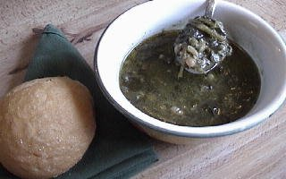

MANASTE
- 1 1/2 CUP DRY NAVY BEANS
- 2 BUNCHES ITALIAN DANDELION GREENS - COARSELY CHOPPED
- 1/2 CUP OLIVE OIL
- 8 CLOVES GARLIC - MINCED
- SALT TO TASTE
COOK BEANS UNTIL SOFT AND RESERVE LIQUID. BOIL GREENS UNTIL SOFT AND THEN COMBINE BOTH. SIMMER UNTIL MIXTURE BECOMES SLIGHTLY CREAMY. ADD OLIVE OIL, GARLIC, AND SALT. SIMMER AGAIN FOR ABOUT 15 MINUTES. SERVE WITH HARD CRUST BREAD AND A DRIZZLE OF OLIVE OIL.
NOTE: THIS RECIPE IS TRADITIONALLY MADE WITH ITALIAN DANDELIONS, BUT ANY COOKING GREEN OR MIX OF GREENS MAY BE USED, SUCH AS; BROCCOLI, BROCCOLI RAPINI, SWISS CHARD, SAVOY CABBAGE, COLLARDS, KALE, ESCAROLE, TURNIP GREENS, YU CHOY SUM, A CHOY, SPINACH, OR MUSTARD GREENS.
NOTE:: SOAK BEANS AT LEAST TWO HOURS OR OVERNIGHT. RINSE THEM WELL AND THEN PLACE IN A PRESSURE COOKER WITH ENOUGH WATER TO COVER THE BEANS. FURTHER DIRECTIONS FOR PRESSURE COOKING THE BEANS AND OTHER FOODS CAN BE FOUND AT THIS LINK.
NOTE::: IF YOU DO NOT USE A PRESSURE COOKER, YOU CAN SOAK THE BEANS OVERNIGHT. RINSE THEM WELL IN THE MORNING, AND PLACE IN A LARGE POT WITH LOTS OF WATER. COOK OVER MEDIUM-HIGH HEAT FOR 3 TO 6 HOURS OR UNTIL BEANS ARE TENDER. WATCH THE BEANS CAREFULLY, STIRRING OCCASIONALLY. ADD WATER AS NEEDED.
MAKES APPROX. 6 SERVINGS.